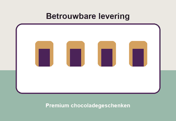

Kwaliteit
Wij ontwikkelen producten met aandacht voor smaak, verpakking en doelgroep.
About DutchDelight
DutchDelight Chocolates is een Nederlandse producent van hoogwaardige chocoladeproducten en chocoladeconcepten voor B2B-klanten.
Met 35 medewerkers ontwikkelen en produceren wij merken voor retailers, horeca, distributeurs, sportlocaties, vendingbedrijven, scholen, bedrijfscatering en cadeauleveranciers.

DutchDelight is de corporate brand achter drie zelfstandige commerciële merken: Noiré, Pulse en TrueCacao. In 2025 verkochten wij 24 miljoen chocoladeproducten binnen Europa.
De sector premium chocolade bestaat uit producenten en distributeurs die zich richten op chocoladeproducten in het hogere segment van de markt.
Binnen deze sector spelen smaak, uitstraling, productkwaliteit en herkomst van grondstoffen een belangrijke rol. Premium chocolade wordt verkocht via speciaalzaken, delicatessenwinkels, luxe retail, horeca en distributeurs die zich richten op hoogwaardige voedingsproducten.
Kwaliteit en beleving zijn belangrijke thema's. Afnemers zoeken producten die zich onderscheiden door bijzondere smaakcombinaties, een verzorgde presentatie en een luxe uitstraling. Daarnaast wordt duurzaamheid belangrijker, bijvoorbeeld bij verantwoord geproduceerde cacao, eerlijke productieketens en duurzamere verpakkingen.
DutchDelight Chocolates heeft zich de afgelopen jaren vooral gericht op groei binnen bestaande markten. Daarbij lag de nadruk op het vergroten van de afzet met het bestaande assortiment.
Tegelijkertijd verandert de Europese markt voor premium chocolade snel. Afnemers en consumenten hebben steeds meer keuze en tonen belangstelling voor nieuwe smaken, opvallende verpakkingen en producten met een onderscheidend verhaal. Ook concurrenten blijven vernieuwen en brengen regelmatig nieuwe productlijnen op de markt.
Door de verkoop van 24 miljoen chocoladeproducten in 2025 heeft DutchDelight een stabiele positie opgebouwd. Om aantrekkelijk te blijven voor bestaande en nieuwe afnemers blijft vernieuwing belangrijk.
Wij ontwikkelen producten met aandacht voor smaak, verpakking en doelgroep.
Zakelijke klanten moeten kunnen rekenen op heldere afspraken en stabiele levering.
Wij denken mee over assortimentskeuze, presentatie en verkoopmomenten.
Wij volgen klantvragen, feedback en online signalen actief op.
Elke innovatie moet passen bij de positie en doelgroep van het merk.
Partners ontvangen informatie, beeldmateriaal en salesondersteuning.